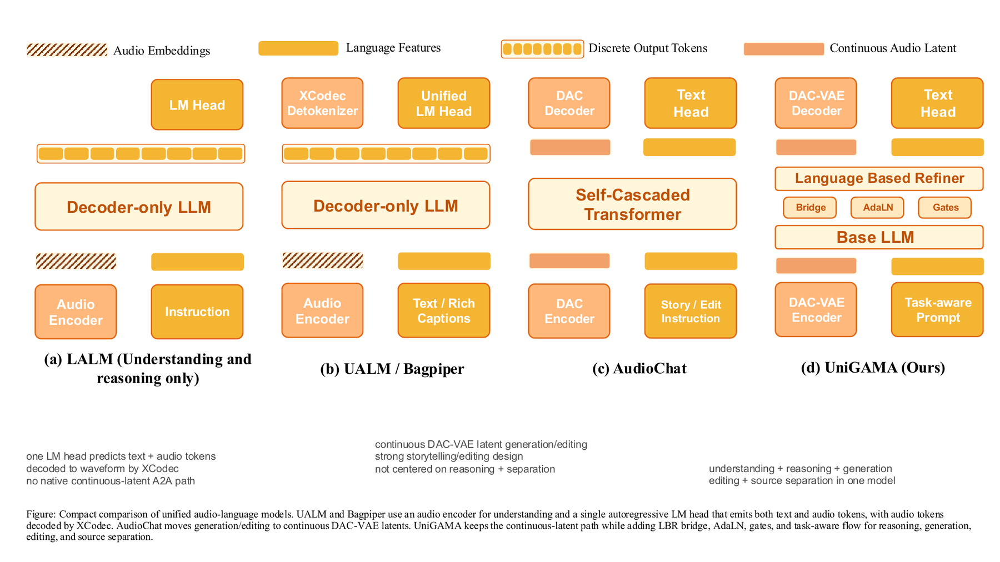
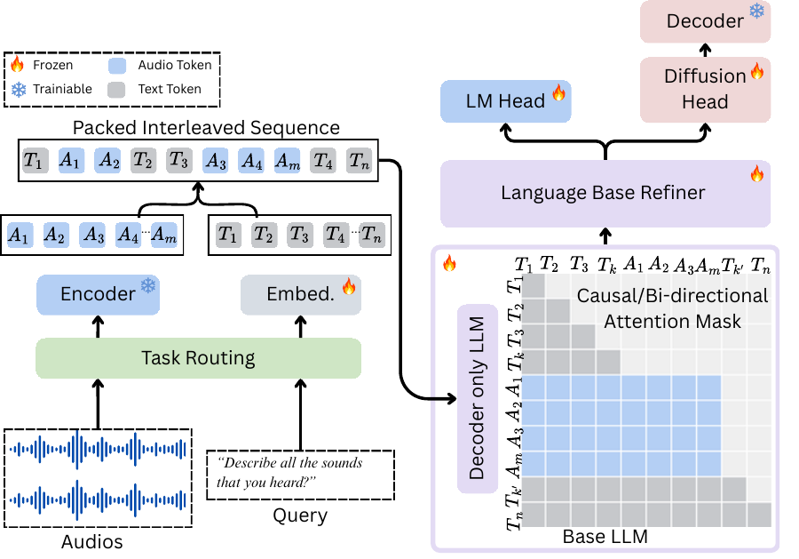
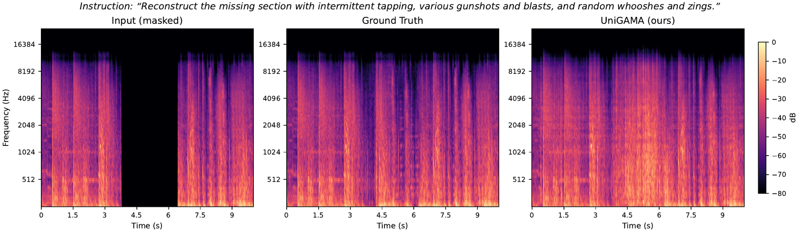

One model for audio understanding and generation
UniGAMA unifies audio-to-text understanding, audio reasoning, text-to-audio generation, and text-guided audio editing in a single decoder-only architecture.
Unified Generative Audio Model Architecture
A unified audio-language model for understanding, reasoning, generation, and editing. UniGAMA brings audio-to-text reasoning, text-to-audio synthesis, text-guided editing, MIDI rendering, and sketch-to-sound control into one continuous-latent decoder-only model.

Why UniGAMA
Audio systems are usually split between understanding models that cannot synthesize audio and generators that cannot reason about audio. UniGAMA closes that gap by training a shared language backbone and latent audio generator together, using one sequence format and one set of model weights.
UniGAMA unifies audio-to-text understanding, audio reasoning, text-to-audio generation, and text-guided audio editing in a single decoder-only architecture.
Instead of autoregressing over discrete codec tokens, UniGAMA predicts conditional-flow velocity over DAC-VAE latents, preserving a high-fidelity continuous audio path.
The generation pathway preserves pretrained language representations through multilevel hidden-state bridges, token-type adaptive layer normalization, per-head attention gates, and a coarse-to-fine diffusion head.
Packed text and audio sequences share one forward pass while combining next-token prediction with conditional flow matching under task-aware attention and diffusion-loss schedules.

Results Snapshot
The current paper reports UniGAMA on audio reasoning benchmarks, text-to-audio generation, audio captioning, ASR, and TTS. Lower is better for FD, KL, and WER; higher is better for the remaining metrics.
| Area | Task | Metric | UniGAMA |
|---|---|---|---|
| Audio reasoning | MMAU | Sound / Music / Speech / Avg | 46.4 / 40.6 / 54.3 / 47.1 |
| Audio reasoning | MMAR | Accuracy | 41.6 |
| Text-to-audio | AudioCaps | FD / KL / IS / CLAP / AES | 175.63 / 2.72 / 9.30 / 0.38 / 4.02 |
| Captioning | AudioCaps | METEOR / CIDEr / SPIDEr / FENSE | 15.1 / 49.2 / 12.2 / 41.1 |
| Captioning | Clotho | METEOR / CIDEr / SPIDEr / FENSE | 10.2 / 9.2 / 8.4 / 41.4 |
| Speech | LibriTTS ASR | WER lower is better | 13.70 |
| Speech | LibriTTS TTS | Whisper WER lower is better | 25.53 |
Audio Demos
Each card shows the prompt and the available input, generated output, and reference audio. These clips illustrate UniGAMA's unified audio path across preservation, editing, MIDI-to-audio, sketch-to-drums, and sketch-to-instrument tasks.
Reproduce this audio without any changes.
Play this audio backwards.
Tech house drum loop.
Warm pad melody.
Render the MIDI performance as an instrument sound.
Render the MIDI performance as an instrument sound.
Architecture
UniGAMA combines next-token prediction for text with conditional flow matching for audio latents. A task-aware attention mask keeps language causal while allowing audio spans to use bidirectional latent context during generation and editing.

Target waveforms are encoded as 48 kHz mono DAC-VAE latents. Understanding tasks use audio features for text prediction; generation tasks supervise latent velocity.
Qwen3-1.7B-Base provides the shared decoder-only language backbone for prompts, answers, captions, and task instructions.
The Language-Bridged Refiner receives language hidden states and timestep conditioning, then predicts flow-matching velocity for audio spans.
Three-branch classifier-free guidance separates text conditioning from source-audio conditioning, while partial noising enables edit-mode generation.
Control-Conditioned Extensions
UniGAMA extends the base understanding/generation model with frame-aligned controls. MIDI controls provide symbolic pitch, timing, velocity, and instrument-family signals. Sketch controls provide human-like time-varying acoustic cues extracted from humming, beatboxing, tapping, vocal imitation, or degraded target audio.
MIDI and sketch controls are projected into one fixed-width time-control tensor. MIDI occupies the symbolic slice, sketch features occupy the acoustic slice, and source flags tell the model which control family is active for each training example.
This is implementation detail rather than a separate paper figure, so the website keeps it textual.
Monophonic MIDI performances are rendered through Vital voices spanning sine, saw, square, triangle, bass, pluck, bell, keys, organ, pad, string, brass, supersaw, and chiptune families.
Synthetic vocal sketches such as hum, breathy hum, whistle, buzzy voice, and la variants follow MIDI pitch and timing, then condition target instrument renderings.
Beatbox-like controls condition full drum loops built from sample-pack one-shots, with house, techno, hip hop, trap, drum and bass, and afro-inspired templates.
Isolated kick, clap, snare, hat, percussion, and effect one-shots teach transient control in addition to full loops and melodic instruments.
Data Mixture
The training mixture combines audio reasoning, captioning, speech, text-to-audio, audio editing, and control-conditioned rendering. The control-only ratio is 40 percent MIDI-to-audio, 40 percent sketch-to-instrument, 15 percent sketch-to-drums, and 5 percent sketch-to-one-shot.

Training Pipeline
UniGAMA uses staged training to stabilize the shared language and audio objectives. Sketch-conditioned examples deliberately corrupt controls during training so the model learns to respond to natural human recordings instead of only pristine audio-derived features.
Train the unified language and latent-generation path on audio-to-text, text-to-audio, ASR, TTS, and language-modeling data with a 2:2:1 T2A:A2T:text mixture.
Mix reasoning, captioning, editing, preservation, inpainting, scene mixing, MIDI rendering, and sketch-conditioned generation using homogeneous microbatches.
Augment sketch controls with median filtering, temporal jitter, quantization, control noise, frame dropout, gain jitter, pitch jitter, periodicity jitter, and channel dropout.
Use Qwen3-0.6B with vLLM to rewrite metadata-derived labels into short 4-12 word prompts while preserving only facts present in the generated metadata.